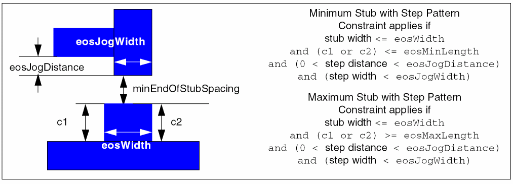
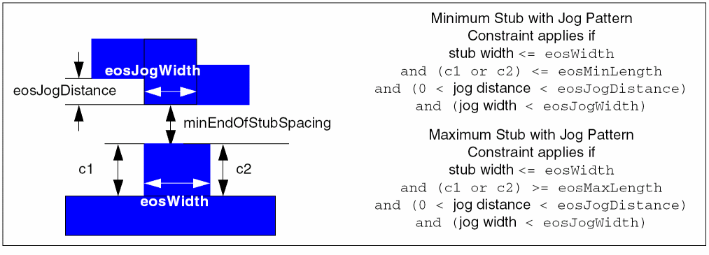
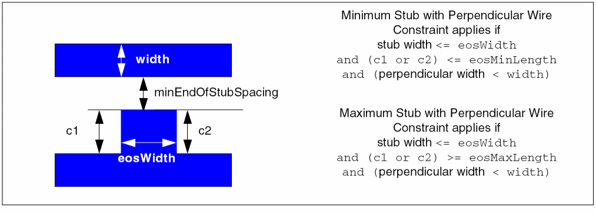
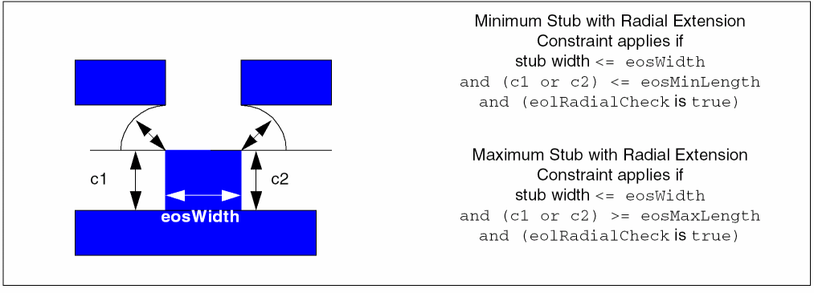
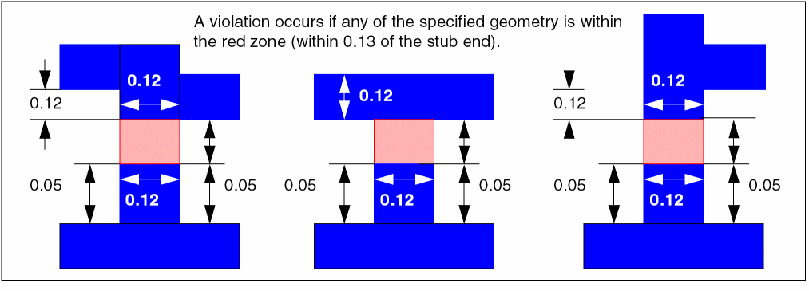

minEndOfStubSpacing
Specifies the minimum spacing between a stub and its neighboring geometry for two types of stubs.
-
A minimum stub has a side that is less than or equal to a given length (
eosMinLength). -
A maximum stub has a side that is greater than or equal to a given length (
eosMaxLength).
The constraint applies when any geometry occurs within a region defined by the minEndOfStubSpacing constraint, the width of the stub (eosWidth), and the side length for maximum stubs (eosMaxLength) and/or minimum stubs (eosMinLength). The following figure shows examples of stubs where c1 and c2 are the stub sides.
The following types of neighboring geometries will trigger the constraint:
-
A step pattern with a step distance less than
eosJogDistanceand a step width less thaneosJogWidth
 -
A jog pattern with a jog distance less than
eosJogDistanceand jog width less thaneosJogWidth
 -
A perpendicular wire (optionally less than a given
width)
 -
A wire within radial proximity of a stub end corner

minEndOfStubSpacing Quick Reference
Value Type
The minEndOfStubSpacing constraint has a Value that represents the minimum distance required between the end of a stub and its neighboring geometry.
Parameters
-
eosWidth(Value) is the maximum width of the stub. The constraint applies only when the stub width is less than or equal to the specifiedeosWidthparameter value. -
eosMaxLength(Value) is the minimum length for one side of a maximum stub. The constraint applies only when one side of the stub is greater than or equal to this value. -
eosMinLength(Value) is the maximum length for one side of a minimum stub. The constraint applies only when one side of the stub is less than or equal to this value. -
eosJogDistance(Value) andeosJogWidth(Value) are optional and specify the step pattern parameters. The step pattern is recognized when 0 < step distance <eosJogDistanceand step width <eosJogWidth. A violation occurs if a step pattern is found that is less thanminEndOfStubSpacingfrom the stub end. -
eosJogDistance(Value) andeosJogWidth(Value) are optional and specify the jog pattern parameters. The jog pattern is recognized when 0 < jog distance <eosJogDistanceand jog width <eosJogWidth. A violation occurs if a jog pattern is found that is less thanminEndOfStubSpacingfrom the stub end. -
width(Value) is optional and specifies the width of metal within the projection of the stub end that will trigger the constraint. This parameter is checked only if neither a step nor jog pattern is detected. -
eolRadialCheck(BoolValue) is optional and enables radial checking from the stub end corners. This parameter is only checked whenwidth,eosJogDistance, andeosJogWidthare not given.
Examples
The following example for a minimum stub results in a violation whenever any wire is located within minEndOfStubSpacing of the stub end.
set_constraint_parameter -name eosMaxLength -Value 0.28
set_constraint_parameter -name eosWidth -Value 0.24
set_constraint_parameter -name eolRadialCheck -BoolValue true
set_layer_constraint -layer Metal2 -constraint minEndOfStubSpacing -Value 0.20 -hardness hard
The following example for a maximum stub results in a violation if one of the following occurs:
- A jog or step pattern is detected that is within 0.13 of the stub end.
-
A less than 0.12 wide wire is detected within 0.13 of the stub end.

set_constraint_parameter -name eosMaxLength -Value 0.05
set_constraint_parameter -name eosWidth -Value 0.12
set_constraint_parameter -name eosJogDistance -Value 0.12
set_constraint_parameter -name eosJogWidth -Value 0.12
set_constraint_parameter -name width -Value 0.12
set_layer_constraint -layer Metal3 -constraint minEndOfStubSpacing -Value 0.13 -hardness hard
Related Topics
Return to top